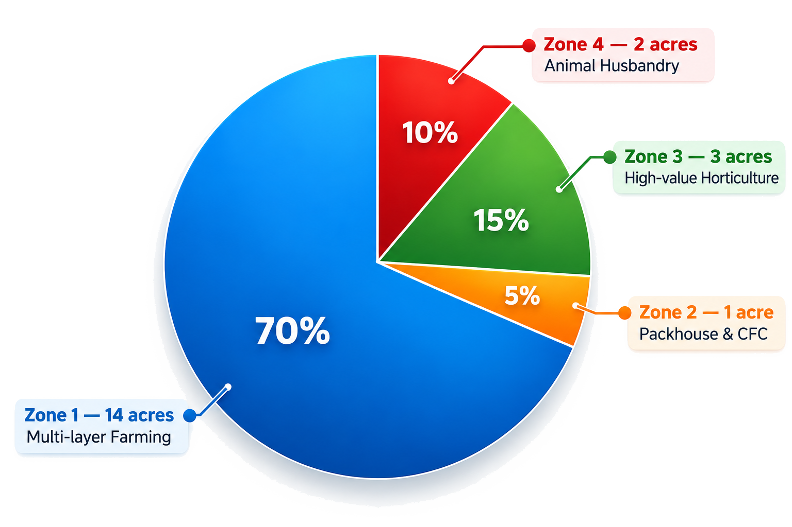

Within a single DSMS, the operational model of SAFE Mission has been designed as a 20‑acre integrated AEZ architecture. This is primarily composed of four operational zones.
Together, these four zones combine production + post-harvest + processing + trade + leasing + animal husbandry + export ecosystem into a single district-level cooperative asset structure.
